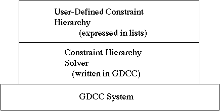

（１７）並列階層制約論理型言語：Ｐ−ＣＨＡＬ
マ シ ン：Multi-PSI
環 境：PIMOS
言 語：GDCC
ソース量：17 KB
文 書：なし
概要
制約に強さの階層を導入し、できるだけ強い制約を満たす解を並列に探索する
処理系である。
システムアーキテクチャ

機能
階層制約並列処理系Ｐ−ＣＨＡＬは、問題解決において高水準の記述をユーザ
に許すような、新しいプログラミング・パラダイム、「制約プログラミング」
に基づき、さまざまな領域における制約の成立の要求度、すなわち制約の階層
を扱うことが可能な並列制約処理系である。
- １．階層制約の並列処理:
- ボトムアップによる極大無矛盾集合計算とともにＧＤＣＣによる
並列処理を用いて、計算量の大きな制約の階層の処理を軽減している。
- ２．各種の領域の問題に対応：
- 階層制約並列処理系Ｐ−ＣＨＡＬは、ユーザの各種の問題領域に
対応するため、非線形代数方程式、真偽値上の等式といった、各種制約のため
の制約評価系が用意されており、これらの制約に対して強さの階層を指定でき
るようになっている。
参考文献
- Satoh,K., "Formalizing Soft Constraints by Interpretation
Ordering", Proceedings of the Ninth European Confernce on Artificial
Intelligence, pp.585-590,Stockholm,Sweden(1990).
ＦＴＰ
- 並列階層制約論理型言語：Ｐ−ＣＨＡＬ [24K]

www-admin@icot.or.jp